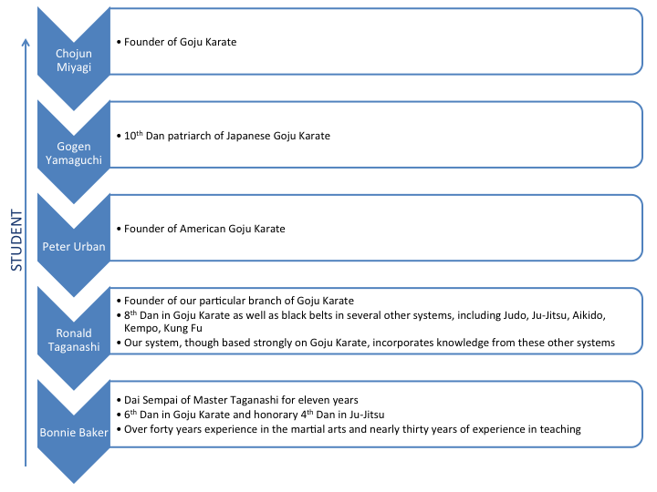

Goju Karate
Goju Karate has a history going back over a century, and was originally developed on the island of Okinawa, which is now a prefecture of Japan. The techniques that would later become karate were developed by Okinawan masters who trained in Chinese Kung Fu. Goju Karate was most heavily influenced by the White Crane style of Kung Fu, which was practiced in the Fujian Province in China. The greatest master of White Crane Kung Fu was Sifu Ryu Ryuko.
The founder of Goju Ryu Karate is Miyagi Chojun Sensei, who adapted Higaonna Kanryo's style of Naha-te into one of the first karate schools. "Goju" translates literally as "hard-soft," a name which is drawn from the Chinese martial arts Bible called "The Bubishi". "Hard-soft" refers to the hard motion of exhalation and the soft motion of inhalation. Goju Ryu embodies this hard element in strong strikes and kicks, and balances it with the soft and circular steps and blocks that give this style its distinctive flow.
In 1959, Goju Karate was brought to the United States by Master Peter Urban, who had trained under Yamaguchi Sensei since 1954. It was further developed by Master Ronald Taganashi to form the style we study today: Kon-Do Goju-Ryu Karate. Master Taganashi held black belts in several martial arts in addition to karate, including Judo, Ju-Jitsu, Aikido, Kempo, and Kung Fu. As a result, Kon-Do Goju-Ryu Karate incorporates elements of all of these styles.
Our Lineage
